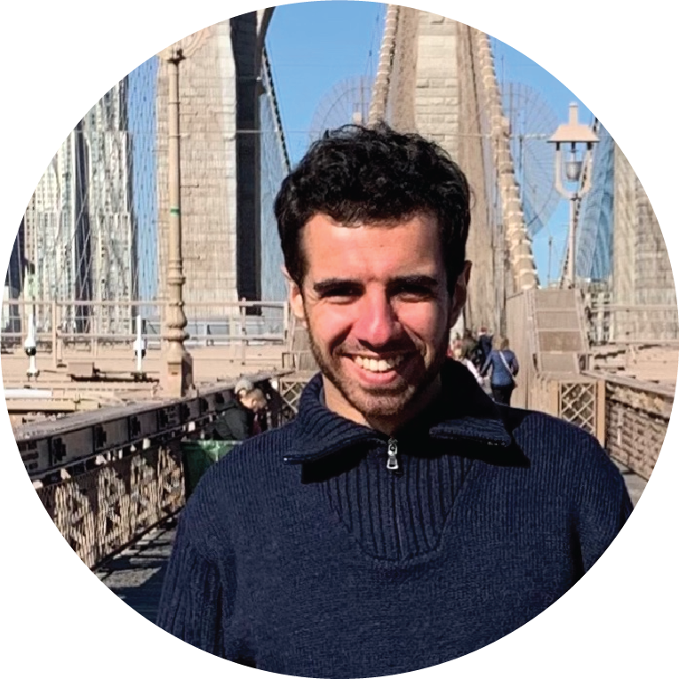

Alessandro E. Pasqui
Theoretical physicist focused on computational frameworks bridging AI and physics-based modeling for inverse problems.
Postdoc @ MICS Lab, CentraleSupélec
alessandro [dot] evanson-pasqui [at] centralesupelec [dot] fr
ap [dot] pasqui [at] gmail [dot] com
📍 Paris-based (remote or on-site)
About me [cv]
Passionate about machine learning, with a particular interest in applying differentiable modeling and closed-loop optimization to understand complex physical systems.
I am currently a Postdoc researcher at the MICS laboratory (Mathématiques et Informatique pour la Complexité et les Systèmes) at CentraleSupélec, Université Paris-Saclay.
I recently completed my PhD at PSL Université de Paris as a Marie Skłodowska-Curie Fellow, working at the Collège de France and École Normale Supérieure under the supervision of Dr. Hervé Turlier and in collaboration with Maxence Ernoult from Google DeepMind.
My doctoral research focused on AI-based methods for inverse problems in biological cell systems, developing computational frameworks that bridge physics-based modeling, machine learning, and cell biology.
Key projects include:
- VertAX — a differentiable vertex model implemented in JAX for efficient forward and inverse modeling of confluent tissues, leveraging automatic differentiation and bilevel optimization to infer cellular parameters and reproduce tissue-scale behavior. (Manuscript in preparation for Nature Computational Science)
- ZAugNet — a self-supervised generative model for 3D bio-imaging (built in PyTorch) that uses adversarial learning and knowledge distillation to enhance axial resolution in microscopy data. (Manuscript under revision at Nature Communications)
Before my PhD, I completed a Master’s Degree in Statistical Physics at Sapienza University of Rome and the Italian Institute of Technology, where I developed high-performance algorithms for shape matching and protein–receptor interaction studies. My Bachelor’s thesis, also at Sapienza, explored percolation in models with long-range interactions using analytical and numerical methods.
Social Links
- Scholar: https://scholar.google.com/citations?user=YOUR_USER_ID
- GitHub: https://github.com/apasqui
- LinkedIn: https://www.linkedin.com/in/appasqui